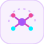
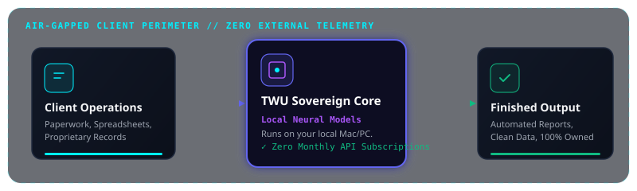

We engineer bespoke internal tools, private on-premise AI models, and air-gapped sovereign infrastructure. Zero third-party cloud telemetry. Zero recurring per-seat subscriptions. You own the code forever.

Stop paying recurring seat subscriptions for bloated software. We build lean, high-velocity internal tools that solve your exact bottlenecks—automatic scheduling, inventory calculators, and paperless job tracking—owned completely by your firm.
How our systems operate inside your air-gapped perimeter with zero cloud data leakage.

I founded TWU LLC on a simple principle: computers are meant to empower people, not entrap them in perpetual software subscriptions.
You shouldn't have to bend your workflows around rigid corporate software. We craft bespoke tools that adapt to you, run on the hardware you already own, and remain under your sovereign control forever.
We bring healthcare-grade precision, deterministic safety invariants, and hands-on Linux/cluster systems practice to every client problem.
// TECHNICAL SPECIFICATIONS
• Registered Entity: TWU LLC
• Studio Base: Mesa, Arizona
• Architecture: Sovereign Offline Runtime & Air-Gapped Core
• Deliverable Standard: 100% Client Ownership. Zero Cloud Lock-In.
Have an operational bottleneck, an expensive software bill, or want to deploy private AI in your facility? Connect directly with the studio.